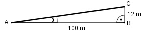

Aufgabe 69 Der Brennerpass hat eine Steigung von 12%. Wie groß ist der durchschnittliche Steigungswinkel α?  Im Dreieck ABC: 12 m tan α = --------- = 0,12 --> α = 6,8° 100 m
Aufgabe 69 Der Brennerpass hat eine Steigung von 12%. Wie groß ist der durchschnittliche Steigungswinkel α?
